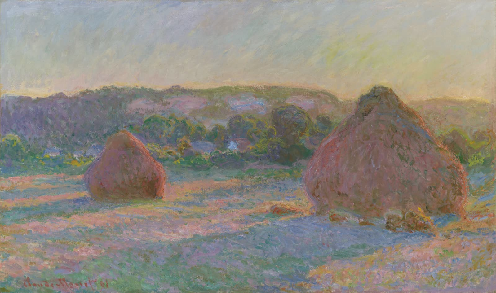

藝術 印象派 莫內怎麼畫光
3 / 5
莫內怎麼畫光
你問：為什麼莫內的畫看起來會發亮？
1
1877 年的車站：蒸汽把光打散，莫內畫的是空氣，不是火車。
2
1882 年的海崖：用短筆觸並排顏色，不在調色盤上先混。
3
1891 年的麥草堆：同一堆草他畫了二十幾張，每張只差在一天裡的時間。這張是夏末傍晚，看影子的顏色。
4
1900 年，搬到自己的花園
5
1906 年，最後只剩水面
試試看點下面的三個重點，畫上會圈出對應的地方；右邊換年代。
標註原畫

影子是藍紫色 麥草堆（夏末）· 1890–91 · 芝加哥藝術博物館重播標註
1影子是藍紫色
夕陽偏橘，背光處就偏向它的對比色，不是加黑。2邊緣發亮
背光那側描了一圈亮橘，光從草堆後面透過來。3天空不是藍的
黃綠混粉紅，整張畫的溫度從這裡來。1877
1882
1891
1900
1906